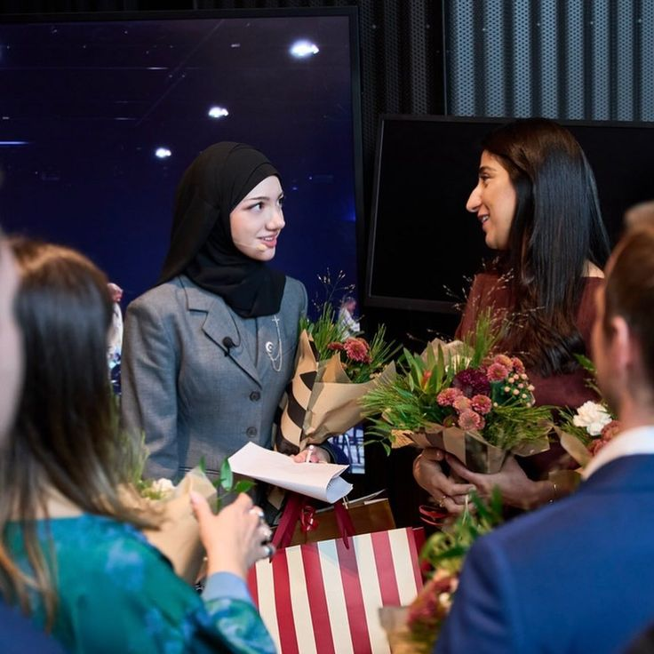
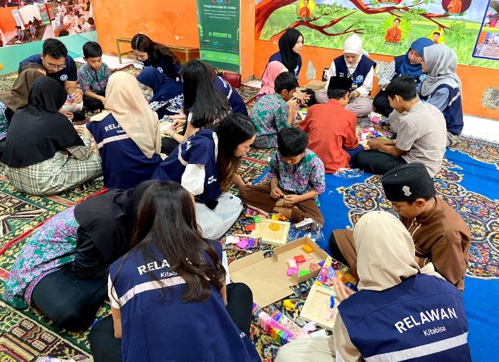
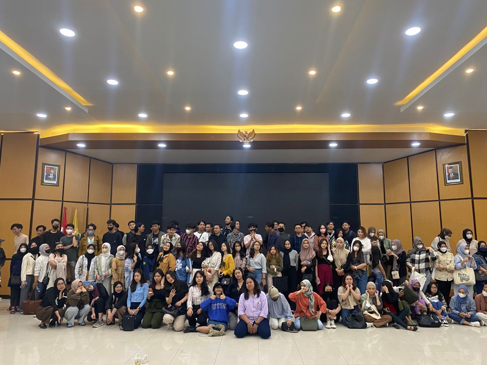
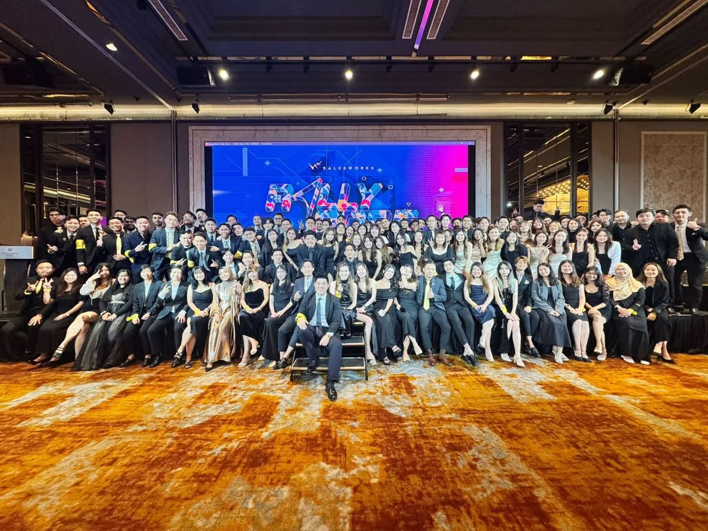

Sejarah GenuWin
Cerita Kami
Cerita GenuWin dimulai pada 2024, hingga kini.
Gagasan GenuWin Bermula
Sebagai Awardee Beasiswa Unggulan ia paham itu bukan akhir segalanya melainkan awal untuk harus bertumbuh lebih besar demi cita-cita dan kemauan untuk berusaha, namun membutuhkan arahan dan dukungan demi bisa berdampak luas bagi masyarakat di masa muda.

Langkah Pertama
GenuWin dibentuk dari komunitas kecil beranggotakan hanya belasan orang dan mulai membagikan informasi terkait beasiswa dan lomba nasional hingga internasional bagi semua kalangan. Mulai membuka kegiatan belajar dan mengajar bersama untuk mereka yang tak dapat duduk di bangku sekolah

Perkembangan Komunitas
GenuWin mulai merekrut staf paruh waktu untuk mengembangkan situs, mengelola konten, dan menjalankan kegiatan percontohan. Tim mengawali kegiatannya dengan sesi berbagi pengalaman dan klinik persiapan beasiswa untuk kelompok kecil. Dissi lain Forum Beasiswa Unggulan (FABU) membuka ruang bagi calon pendaftar untuk bertanya dan bertukar pengalaman. Melalui Mentor Unggulan, peserta mendapat arahan untuk menyusun jadwal persiapan, masukan atas draf esai, dan kesempatan mengikuti simulasi wawancara.

Satu Dekade GenuWin
GenuWin diproyeksikan menjangkau 10.000 peserta di 20 provinsi dan mendampingi 100 proyek pendidikan yang dipimpin pemuda. Komunitas setempat meneruskan kegiatan di daerah masing-masing, sementara alumni kembali sebagai mentor dan menggunakan kemampuan yang mereka miliki untuk mendampingi generasi berikutnya.
